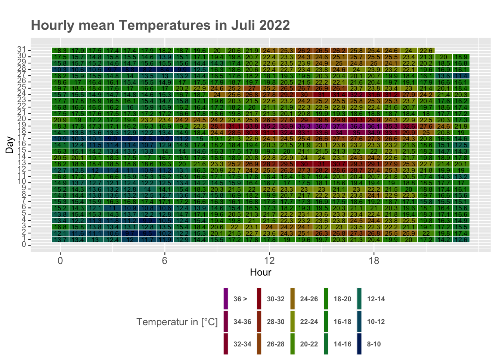
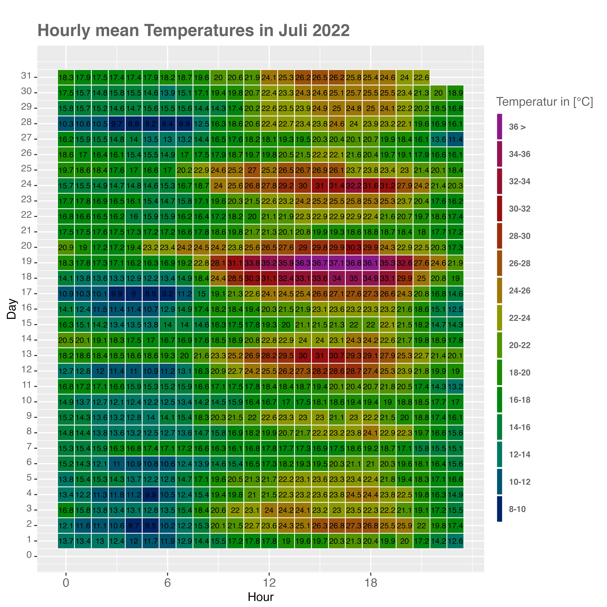

Chapter 15 Heatmaps
In the previous lecture, the concept of chill and the expected changes were effectively demonstrated using heatmaps. In this chapter, this visualization method is utilized to depict the temperature measurements taken in July 2022 at the weather station in Zülpich-Fuessenich. Preprocessing is necessary for this purpose. One challenge involves categorizing the temperatures into classes. To gain an understanding of how the classes can be set within the temperature data, one can initially use the
make_classesfunction to get an overview.
make_classes <- function(data, scale_) {
data <- as_tibble(data)
min = min(data) - 1
max = max(data)
sacle = scale_
end = round(((max - min) / sacle))
data[, "class"] <- NA
for (i in seq(1, nrow(data[, 1]))) {
for (j in seq(0, (end - 1))) {
if (data[, 1][i,] > (min + end * sacle)) {
data[, "class"][i,] = paste((min + end * sacle)," >")
break
}
if (data[, 1][i,] >= (min + (j * sacle)) &&
data[, 1][i,] <= ((min + sacle) + (j * sacle))) {
data[, "class"][i,] = paste((min + (j * sacle)),"-",
((min + sacle) + (j * sacle)))
break
}
}
}
return(list(data,
unique(data[,"class"]),
table(data[,"class"])))
}First let’s load some Data
weather_fue <- read_delim("/Users/Phil/Documents/Auswertung_Manuel_Juli_22/temp_hum_pres08.08.22.csv")
mod_weather_fue <-
weather_fue %>% filter("2022-07-01 00:00:00" < date) %>%
filter("2022-08-01 00:00:00" > date) %>%
select(temperature, period, type, date, sensor) %>%
filter(period == 1, type == 0, sensor == 0)The function
make_classes()is not part of thechillRpackage, and has thus been implemented here. It does not accept any data field as input. The temperatures must be passed directly, similar to themax()function, which is implemented by default in R. Thescale_argument must be used to specify the class width. A small demonstration of the function will be shown below.The function returns a list with multiple elements. The first list entry simply returns all the formed classes. The second entry provides an overview of the classes that were used. The third entry shows how frequently each class is represented.
df = mod_weather_fue
df[, "class"] = make_classes(df$temperature, scale_ = 2)[[1]][, 2]
kable(df[1:30,], caption = "Dataset Weather Fuessenich with Classes") %>%
kable_styling("striped", position = "left",font_size = 10)%>%
scroll_box(width = "100%")| temperature | period | type | date | sensor | class |
|---|---|---|---|---|---|
| 13.760000 | 1 | 0 | 2022-06-30 23:00:00 | 0 | 13.235 - 15.235 |
| 13.698333 | 1 | 0 | 2022-07-01 00:00:00 | 0 | 13.235 - 15.235 |
| 13.351667 | 1 | 0 | 2022-07-01 01:00:00 | 0 | 13.235 - 15.235 |
| 12.951667 | 1 | 0 | 2022-07-01 02:00:00 | 0 | 11.235 - 13.235 |
| 12.410000 | 1 | 0 | 2022-07-01 03:00:00 | 0 | 11.235 - 13.235 |
| 11.958333 | 1 | 0 | 2022-07-01 04:00:00 | 0 | 11.235 - 13.235 |
| 11.673333 | 1 | 0 | 2022-07-01 05:00:00 | 0 | 11.235 - 13.235 |
| 11.923333 | 1 | 0 | 2022-07-01 06:00:00 | 0 | 11.235 - 13.235 |
| 12.876667 | 1 | 0 | 2022-07-01 07:00:00 | 0 | 11.235 - 13.235 |
| 14.400000 | 1 | 0 | 2022-07-01 08:00:00 | 0 | 13.235 - 15.235 |
| 15.526667 | 1 | 0 | 2022-07-01 09:00:00 | 0 | 15.235 - 17.235 |
| 17.248333 | 1 | 0 | 2022-07-01 10:00:00 | 0 | 17.235 - 19.235 |
| 17.821667 | 1 | 0 | 2022-07-01 11:00:00 | 0 | 17.235 - 19.235 |
| 17.816667 | 1 | 0 | 2022-07-01 12:00:00 | 0 | 17.235 - 19.235 |
| 18.958333 | 1 | 0 | 2022-07-01 13:00:00 | 0 | 17.235 - 19.235 |
| 19.556667 | 1 | 0 | 2022-07-01 14:00:00 | 0 | 19.235 - 21.235 |
| 19.698333 | 1 | 0 | 2022-07-01 15:00:00 | 0 | 19.235 - 21.235 |
| 20.330000 | 1 | 0 | 2022-07-01 16:00:00 | 0 | 19.235 - 21.235 |
| 21.313333 | 1 | 0 | 2022-07-01 17:00:00 | 0 | 21.235 - 23.235 |
| 20.411667 | 1 | 0 | 2022-07-01 18:00:00 | 0 | 19.235 - 21.235 |
| 19.918333 | 1 | 0 | 2022-07-01 19:00:00 | 0 | 19.235 - 21.235 |
| 20.028333 | 1 | 0 | 2022-07-01 20:00:00 | 0 | 19.235 - 21.235 |
| 17.160000 | 1 | 0 | 2022-07-01 21:00:00 | 0 | 15.235 - 17.235 |
| 14.213333 | 1 | 0 | 2022-07-01 22:00:00 | 0 | 13.235 - 15.235 |
| 12.551667 | 1 | 0 | 2022-07-01 23:00:00 | 0 | 11.235 - 13.235 |
| 12.090000 | 1 | 0 | 2022-07-02 00:00:00 | 0 | 11.235 - 13.235 |
| 11.640000 | 1 | 0 | 2022-07-02 01:00:00 | 0 | 11.235 - 13.235 |
| 11.148333 | 1 | 0 | 2022-07-02 02:00:00 | 0 | 9.235 - 11.235 |
| 10.598333 | 1 | 0 | 2022-07-02 03:00:00 | 0 | 9.235 - 11.235 |
| 9.701667 | 1 | 0 | 2022-07-02 04:00:00 | 0 | 9.235 - 11.235 |
In this case, a new column named
classis first written in the dataframedf. The generated classes are then directly written into this column. The formed classes can now be read in the table “Dataset Weather Fuessenich with Classes” in theclasscolumn.At this point, it must be noted that the current approach is for orientational purposes only. In this particular case, the class boundaries will be manually generated at a later time using the
mutate()function from thetidyversepackage. The overall goal is to later provide a function that integrates themake_classes()function and automatically creates a heatmap that can be dynamically modified.
# preprocessing
# create column with date
mod_weather_fue[,"date_new"] =
as.POSIXct(mod_weather_fue$date, format ="%m/%d/%Y %H:%M:%S" )
# separate hours (time)
mod_weather_fue[, "hours"] =
format(mod_weather_fue$date_new, format = "%H:%M:%S")
# pick only hours
mod_weather_fue[, "hours_only"] =
as.numeric(substr(mod_weather_fue$hours, 1, 2))
# delete first row (individual fix)
mod_weather_fue = mod_weather_fue[-c(1), ]
# pick day
mod_weather_fue[, "Tag"] =
as.numeric(substr(mod_weather_fue$date, 9, 10))
# set new col Index with NA
mod_weather_fue[,"Index"] <- NA
m3 <- mod_weather_fue
m3[,"countfactor"] <- NA
m1 <-m3 %>%
# convert state to factor and reverse order of levels
mutate(Index=factor(Index, levels=rev(sort(unique(Index)))))%>%
mutate(countfactor=cut(temperature, breaks=c(8, 10, 12, 14, 16, 18, 20, 22,
24,26,28,30,32,34,36, max(temperature, na.rm=TRUE)),
labels=c("8-10", "10-12", "12-14", "14-16", "16-18", "18-20",
"20-22","22-24","24-26","26-28","28-30",
"30-32","32-34","34-36","36 >")))%>%
mutate(countfactor=factor(as.character(countfactor), levels=rev(levels(countfactor))))
colors <- c("#002565", "#00556E", "#007763",
"#007F3A", "#00860D","#198C00","#519300","#8B9803","#9D7608","#9A520B","#98300D","#951010","#931231","#901551","#8B1A89")
textcol <- "grey40"
ggplot(m1, aes(x=hours_only , y=Tag, fill=countfactor ))+
geom_tile(colour="white", size=0.3)+
geom_text(aes(label=round(temperature, digits = 1)), size=2.3)+
scale_fill_manual(values=rev(colors), na.value = "grey90")+
guides(fill=guide_legend(title="Temperatur in [°C]"))+
theme_grey(base_size=10)+
labs(x = "Hour", y = "Day")+
ggtitle("Hourly mean Temperatures in Juli 2022")+
theme(legend.position="bottom", legend.direction="horizontal",
legend.title=element_text(colour=textcol),
legend.margin=margin(grid::unit(0, "cm")),
legend.text=element_text(colour=textcol, size=7, face="bold"),
legend.key.height=grid::unit(0.8, "cm"),
legend.key.width=grid::unit(0.2, "cm"),
axis.text.x=element_text(size=10, colour=textcol),
axis.text.y=element_text(vjust=0.2, colour=textcol),
axis.ticks=element_line(size=0.4),
plot.background=element_blank(),
panel.border=element_blank(),
plot.margin=margin(0.7, 0.4, 0.1, 0.2, "cm"),
plot.title=element_text(colour=textcol, hjust=0, size=14, face="bold")
)+
scale_x_continuous(breaks = seq(from = 0, to = 23, by = 6))+
scale_y_continuous(breaks = seq(0,31,1))
As seen, it can be somewhat tricky to save the final map in a suitable format. Therefore, the entire map was saved once, and the result was read in as a whole to maintain readability.
